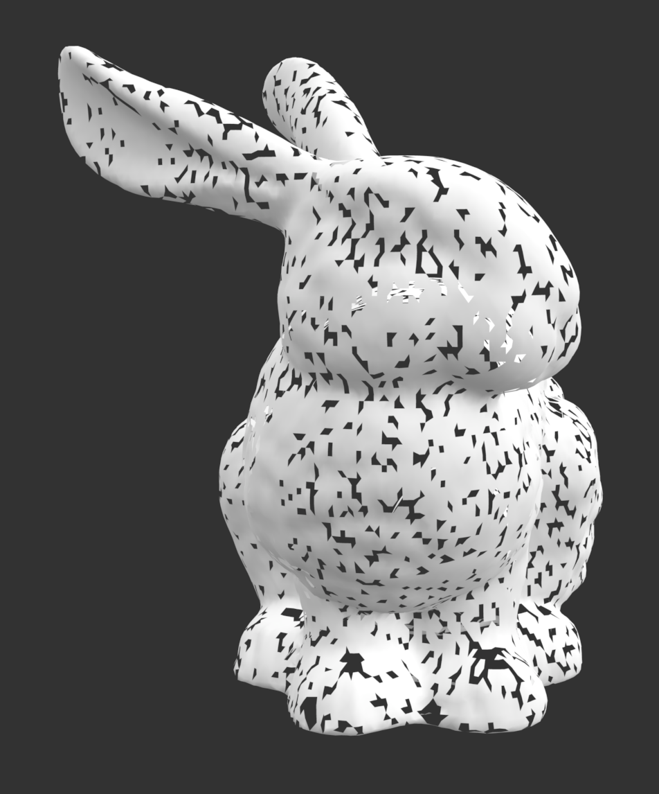

Given a point cloud input (a collection of vertices and their vertex normals), we aim to efficiently output a mesh representation of that point cloud. This is accomplished using the Ball Pivoting Algorithm (BPA) for surface reconstruction. The principle of BPA is that three vertices form a triangle mesh if a ball of radius p intersects those three points and contains no other points. A viable starting point is selected (called the seed triangle) and we pivot our ball around the adjacent edges of the seed triangle until we have consumed all of the reachable edges. The process is then repeated with another seed triangle and completes when all points are considered. BPA is an integral asset for mesh reconstruction since it offers both efficiency and high quality results.
The implementation of this project had several main parts. First, we had to clean our input files. The files we used were downloaded from the Stanford 3D Scanning Repository. This repository had .ply files of different 3D models. The given .ply files were representations of triangle meshes, but we only wanted a point cloud. So we need to keep only the necessary information to represent a point cloud. The original .ply files contain information about the model including the vertices, faces, and vertex normals. For the purposes of our algorithm, we needed vertices and vertex normals. As a result, we created a program that reads these original .ply files and extracts only the information we need for the point cloud. We took all the vertex coordinates, and then interpolated the face normals to calculate the vertex normals from the given face normals. The implementation of this part can be found in `format_conversions/ply_to_input.py`. Once we calculated the vertex normals, we wrote those to our input files that we fed into the main part of the algorithm.
|
|
A large part of the algorithm we will use relies on choosing a good radius for our ball. The use of the ball will be explained in detail in future sections, but it is important for us to define a ball that is able to reach nearby vertices from a starting vertex. We set our radius by computing the average distance between a vertex and its nearest point for all vertices, and scaling that value by a constant (in our case we chose 1.5). Because we haven’t split the points into smaller subsets at this part of the algorithm, calculating the radius is quite expensive and takes O(n^2) time. As a result, it takes quite a long time to find the radius when we run on increasingly higher resolution models. Luckily, the radius only needs to be computed once each time we run the algorithm.
To make future computation simpler, and more efficient, we split all the vertices into voxels of size 2*r. Using the radius r computer in the previous step, we place a vertex in a voxel if the vertex coordinates modulo 2*r equals the corresponding voxel coordinate. This splits our vertices into smaller subgrids as shown in the image below. As a result, when searching for nearby coordinates in the future, we can search in a vertex’s current voxel as well as the vertices in the 27 adjacent voxels that neighbor the current voxel. This significantly reduces the time taken for our future computations.
|
|
The main part of the algorithm we implemented for this project was inspired by the ball-pivot algorithm put forward by Bernardini et. al. This algorithm begins by finding seed triangles as a starting point, and then expanding the triangle mesh outwards from those initial triangles. Expanding the triangle can be visualized by rolling a sphere with radius r starting from the seed triangle until it hits another vertex. We can combine the meshes found from expanding each of these seed triangles into one cumulative reconstructed mesh.
|
|
The first stage of the algorithm is finding seed triangles. The search for a seed triangle takes as input the set of all unused vertices and the desired radius of the sphere. Then, we iterate over the unused vertices. For each unused vertex v, we iterate through all pairs of vertices v1 and v2 in the same neighborhood as v. Neighborhood here is defined as all vertices in the 27 voxels adjacent to v. This can be visualized as a Rubik’s cube, with point v in the center cube. Given our vertices v, v1, and v2, we define our candidate triangle, carefully sticking to a convention that makes sure our triangle has a normal vector going out into the same half space as its vertex normals. After creating this candidate triangle, we check that its normal is compatible with all three vertices. For this, we defined a helper method that takes 3 vertices as input, and returns true if their vertex normals are compatible when connected. For 3 vertices to be compatible, the normal of the triangle they create must be possible given their vertex normals. This is important because we could have two points in a point cloud that are very close to each other in space, but one is meant to be on the opposite surface of the mesh. We don’t want to connect them, and we can avoid it by checking that the normals are compatible. We check that the vertex normals are compatible by making sure that the dot product of each of the vertex normals with the triangle normal is greater than zero. If any one of these are less than zero, we know we are trying to construct an invalid triangle.
After determining that the candidate triangle we have has compatible vertices, we must check that our ball of given radius is tangent to all three of the vertices without touching any other points. To do this, we first compute the center of the ball of the given radius that is tangent to v, v1, and v2. If no such center exists, we must move on to another candidate triangle, because there doesn’t exist a sphere of the given radius that is tangent to the three vertices. If a center does exist, we must ensure that the sphere does not contain any other points. To do this, we can check all other points in the neighborhood of the center of the sphere to ensure that none of them fall within the sphere. If this is the case, we have found a valid seed triangle, so we can return the candidate with vertices v, v1, and v2 as our result.
After we have found a valid seed triangle for our given radius and unused vertices, we can begin mesh expansion. To do this, we maintain a “front” of edges, which is a list of all the existing edges we have yet to roll our sphere over. The first step of mesh expansion is to add all the edges of the seed triangle into the front as front edges, because we are guaranteed that all edges of a seed triangle are new (if there was a pre-existing edge in the seed triangle, we would have already expanded to it earlier). Next, we loop over the elements of the edge front until it is empty. For each iteration, we pop off the first edge in the front. If it’s a boundary edge or a frozen edge, we continue to the next edge in the front without doing anything. This is because a boundary edge is one which we’ve already expanded without finding a valid candidate vertex, and a frozen edge is one with faces of the mesh on both sides, so there is nothing more to expand. Next, we attempt to find a candidate vertex by rolling a ball of the given radius off of the current edge. To do this, we find the valid spheres that can be formed with a vertex in the neighborhood of the vertices in our edge, and find the one that we’d hit first if we were physically rolling a sphere. If we don’t find a valid candidate, we set our current edge as a boundary edge and continue to the next edge in the mesh. If we do find a valid candidate, we remove the vertex we used from the set of unused vertices, create a new triangle with the current edge’s vertices and the new vertex, and append that triangle to our reconstructed mesh. Next we consider the two edges from our old edge to our new vertex. For each one, we have to update their types to frozen or front according to what we already have in our mesh. If we have to set it as a front edge, we also add it to our edge front. This way, our loop will continue expansion along those edges as well.
|
|
After we cannot find any more valid seed triangles, we do some post-processing steps to fill in some of the holes in the final mesh. To do this, we iterate through all the boundary edges we have created, and for any three that form a triangle, we fill in that triangle into our mesh. We can do this because boundary edges have already been rolled over, so the triangle this would create is just slightly bigger than the radius of our sphere.
|
|
|
Throughout the process of creating this project, we ran into several issues that we had to debug. The first issue we faced was selecting the right radius. If the radius is too big, the algorithm connects points that shouldn’t be connected, and you lose a lot of the details in the shape of the model. If the radius is too small, then the sphere rolls through the points and isn’t able to connect any of the vertices together to form triangles. We ultimately decided to choose the radius based on the average distance from every point to its nearest point. We also scale that radius by 1.5 to increase its size a bit and ensure that it isn’t too small to create a good mesh. This solution is not very time efficient, since we iterate through all the coordinates in a double for loop, but it gave us the best results when it came to picking a radius that would connect the vertices successfully.
Another issue we faced while implementing this project was how to visualize and debug our code as we went. It was important that we tested the correctness of individual pieces of our project while we built it up, but we found that many of these modules would be easier to check if we had a way to visualize our results. For example, when calculating vertex normals during the creation of our cleaned input files, we needed to make sure that there wasn’t an error with our math. The easiest way to do this would be to visually check that the normals line up with our expected mesh, so we decided to use Open3D to draw the calculated vertex normals and the points in the cloud in space. By doing this, we were able to visually verify that we were correctly calculating the vertex normals. Similarly, we used Open3D throughout the project to visualize our seed triangle selection, track our edge front, and see how big spheres of different radii were relative to the point cloud.
One of the methods we considered for making our mesh more watertight was to make multiple passes through all the vertices with spheres of different sizes. This would allow us to get the results of our first pass, and then improve the mesh by passing again with a larger sphere radius. We attempted this method, but found that when doing the second pass, if we made the radius much bigger it compromised the visual result of our mesh, making it too coarse and removing the fine details, while if we made the radius only a little bigger, the algorithm didn’t add enough new triangles to make a clear visual difference (only between 2 and 5 new triangles would be added which didn’t affect the resulting mesh enough to tell the difference. Because of these results, we ultimately decided not to implement the second pass since our results looked pretty clear in the first place.
Overall, this project really showed us the work that goes into creating good triangle meshes. Triangle meshes are an integral part of 3D modeling and rendering, and it was very informative to learn about the different techniques used to create these meshes. Students who tackle this project in the future could experiment more with filling all of the holes, as well and improving runtime and speed. Our project implemented some aspects in a naive way that takes a significant amount of time to run, and should be optimized in order to run the algorithm on more detailed and complex point clouds. Overall, we learned about the importance of triangle mesh creation algorithms and all the different aspects that go into making a good triangle mesh for 3D rendering.
Below are side by side comparisons of the input point cloud and output triangle mesh for the highest resolution bunny. Computing the triangle mesh for this input of 34,834 points took about 4 hours to run.
|  | |
Shown below is the result of running our algorithm on a lower resolution model of a dragon.
Repository for 3D Mesh Models : http://graphics.stanford.edu/data/3Dscanrep/
Ball pivoting algorithm for surface reconstruction : https://vgc.poly.edu/~csilva/papers/tvcg99.pdf
An Analysis and Implementation of a Parallel Ball Pivoting Algorithm : https://www.ipol.im/pub/art/2014/81/
Overall, when we worked on this project, we worked on it synchronously in the same room using VSCode live share. One person would be the “controller” and would give access to the other 3 group members. This way, we could all write code at the same time without worrying about merging different branches on github. This also let us all work together on one function when we needed some extra focus on fixing one specific part. Overall, working synchronously helped make sure that everyone was on the same page.
Beyond our synchronous work, we also had some work that we split up. For example, at the very beginning we had two things that we needed to get done before we could work on the main algorithm. Aryan and Ruslana worked on parsing the input .ply files into a format that we could easily use in our algorithm. Aadith and Tarun worked on extracting vertex normals from the given face normals. After this asynchronous bit, we were able to start working together on the project using VSCode live share. Beyond that, another thing that was done asynchronously was visualization. Tarun spent some extra time learning how to use Open3D and debugging our main algorithm so that we could create the visualization that you have seen in the project (like the vertex normals visualization and the seed triangle selection visualization).
Overall, our work was done mostly synchronously with a few asynchronous aspects. Each team member had a valuable contribution, and it was a pleasure working all together to make this project happen.